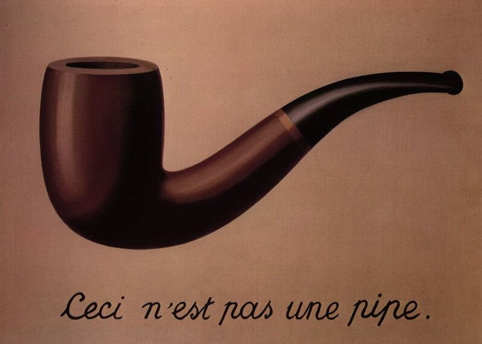
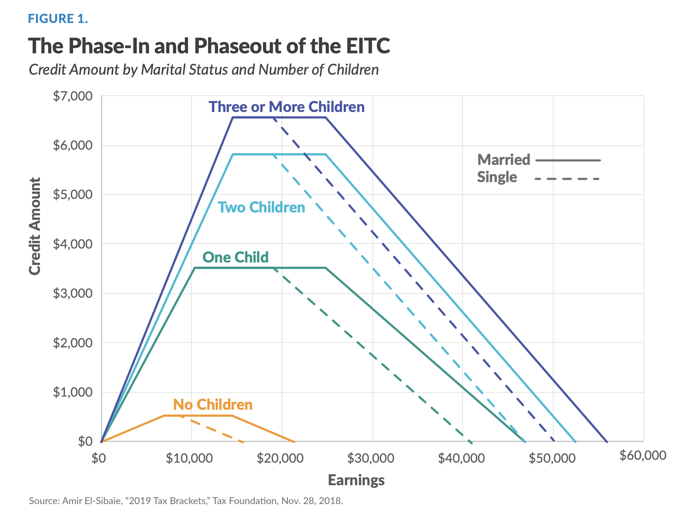
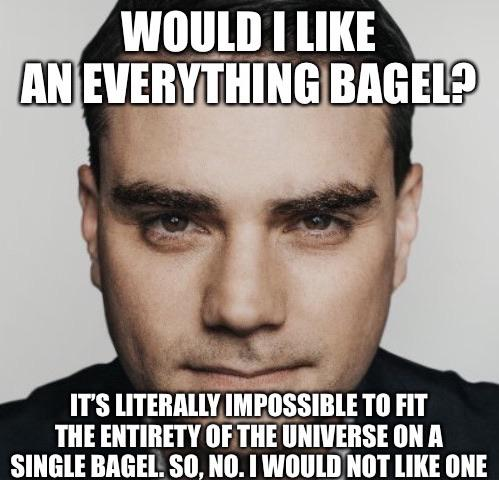
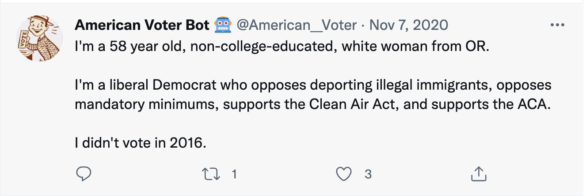

Data wrangling I
POL51
University of California, Davis
September 30, 2024
Plan for today
Wrangling and pipes
Subsetting data
The (tricky!) programming objects
The new starting point
Before, I wrangled data and you plotted the finished product
First step of all your code was ggplot()
Now, you will wrangle the data
First step is now the data object
What is data-wrangling?
…the process of transforming and mapping data from one “raw” data form into another format with the intent of making it more appropriate and valuable for a variety of downstream purposes such as analytics… Data analysts typically spend the majority of their time in the process of data wrangling compared to the actual analysis of the data. – Wikipedia
Most of your time working with data will be spent wrangling it into a usable form for analysis
Pipes: connecting data to functions
You’ve seen these before…
What are pipes?
Pipes link data to functions
They look like this
%>%, or|>Definitely use keyboard shortcuts
- OSX: Cmd + Shift + M
- Windows: Ctrl + Shift + M

Why pipes?
With pipes: 😍
Without pipes: 🤢
Both produce the same output, but pipes make code more legible
Making sense of pipes: “and then…”
You can read the pipe as if it said “and then”…
Take the data object
movies, AND THENfilterso genre1, genre2, or genre3 equal HORROR, AND THENmutateso that…
Subsetting data and logical operators
Our first wrangling function: filter()
filter() subsets data objects based on rules

Why filter?
Why filter?
Lots of real-world applications: finding flights, addresses, IDs, etc.
Sometimes we want to focus on a specific subset of data: the South, Latin America, etc.
Useful to deal with common problems: outliers, missing data, strange responses
The Earned Income Tax Credit (EITC)
Third largest welfare program in the US
Only people who meet certain criteria receive it
Effects of program and its design are hotly debated

Identifying beneficiaries
Imagine you are the IRS, and have data on all 360+ million Americans:
| Sex | Race | Age | Income | Marital | Children |
|---|---|---|---|---|---|
| Female | White | 69 | 24686 | Not married | 2 |
| Female | Hispanic | 55 | 73867 | Not married | 0 |
| Female | White | 83 | 63949 | Not married | 4 |
| Female | White | 29 | 12396 | Not married | 1 |
| Female | White | 23 | 15868 | Not married | 3 |
| Male | Hispanic | 77 | 23084 | Not married | 2 |
| Male | Hispanic | 77 | 65031 | Not married | 2 |
How could use use these variables to identify what benefits they should receive?
Identifying beneficiaries
Say we wanted to identify people in the flat part of the blue line
| Income | Marital | Children |
|---|---|---|
| 24686.32 | Not married | 2 |
| 73866.74 | Not married | 0 |
| 63949.10 | Not married | 4 |
| 12395.74 | Not married | 1 |
| 15867.56 | Not married | 3 |
| 23084.29 | Not married | 2 |
| 65031.14 | Not married | 2 |
Using filter()
To use filter(), we need to tell R which observations we want to include (or exclude) using rules
Making the rules: logical operators
Rules filter data based on whether variables meet certain criteria
Rules rely on logical operators:
Equal to, not equal to, less than, more than, included in, etc.
Observations that meet the rule are returned; those that are not are dropped

The logical operators
| Operator | meaning |
|---|---|
| == | equal to |
| != | not equal to |
| > | greater than |
| < | less than |
| >= | greater than or equal to |
| <= | less than or equal to |
| & | AND (both conditions true) |
| | | OR (either condition is true) |
| %in% | IN (in the set of) |
Using filter()
Say we have some data on 🍎
| name | color | pounds | sweet |
|---|---|---|---|
| Fuji | red | 2 | TRUE |
| Gala | green | 4 | TRUE |
| Macintosh | green | 8 | FALSE |
| Granny Smith | red | 3 | FALSE |
Apples
# A tibble: 4 × 4
name color pounds sweet
<chr> <chr> <dbl> <lgl>
1 Fuji red 2 TRUE
2 Gala green 4 TRUE
3 Macintosh green 8 FALSE
4 Granny Smith red 3 FALSENote
The output reports how many rows and columns our dataset has (4 rows x 4 columns)
Green apples
# A tibble: 2 × 4
name color pounds sweet
<chr> <chr> <dbl> <lgl>
1 Gala green 4 TRUE
2 Macintosh green 8 FALSENotice words are in quotations!
Notice that the number of rows has decreased: 2 x 4
Green and unsweet apples
# A tibble: 1 × 4
name color pounds sweet
<chr> <chr> <dbl> <lgl>
1 Macintosh green 8 FALSENotice TRUE/FALSE are all-caps!
Apples that aren’t green
# A tibble: 2 × 4
name color pounds sweet
<chr> <chr> <dbl> <lgl>
1 Fuji red 2 TRUE
2 Granny Smith red 3 FALSEThe ! symbol negates: not equal to
At least 4 pounds but less than 6
# A tibble: 1 × 4
name color pounds sweet
<chr> <chr> <dbl> <lgl>
1 Gala green 4 TRUE Notice: at least implies greater than or equal to
Combinations: The OR (|) operator
“Observations where either this is true OR that is true”
Combinations: the AND operator (&)
The & operator can be used to combine rules
Returns observations where both rules are true
“Apples that are red AND sweet or green AND sour”:
%in%
The %in% operator is super powerful
It returns observations that belong to a set
%in%
Make a list of countries and return observations that match any of them
Note
To make a “list” of items (a vector), use c()
Your turn: 👑 World leaders 👑
Using the leader dataset, identify:
A Vietnamese Emperor who, in his first year in office, was 11 years old. Famously depraved.
Leaders with graduate degrees who in 2015 reached their 16th year in power.
A leader who held office for more than 20 years, participated in a rebellion, and has a willingness to use force score above 1.7.
10:00
Note
You can use ?leader to see the codebook. The acronym for Vietnam is “VNM”
Objects
The last step: creating objects
Step 1-2: the data, the pipe, the wrangling functions
Objects
In programming, objects can be used to store all sorts of stuff for later use
data, functions, values
We create objects using = or <-
Naming objects
There are only two hard things in Computer Science: cache invalidation and naming things. – Phil Karlton
Recommend: keep it short, easy to type, informative, and use _ to separate words
I use the excellent Tidyverse syntax guide in my work
Failure to object
Without objects, your work washes away, like tears in the rain
Here, we store our data wrangling
Here we didn’t store
# A tibble: 2 × 4
name color pounds sweet
<chr> <chr> <dbl> <lgl>
1 Macintosh green 8 FALSE
2 Granny Smith red 3 FALSE# A tibble: 4 × 4
name color pounds sweet
<chr> <chr> <dbl> <lgl>
1 Fuji red 2 TRUE
2 Gala green 4 TRUE
3 Macintosh green 8 FALSE
4 Granny Smith red 3 FALSENotice the original apples remains unchanged!
The formula
Wrangle the data until you’re satisfied with the output:
Challenge: 🗳️ The (unusual) American voter 🗳️
There’s a Twitter bot that randomly tweet profiles of real voters from the Cooperative Election Study:
Challenge: 🗳️ The (unusual) American voter 🗳️
| state | sex | age | educ | race | pid7 | ideo5 | religion | votechoice | hispanic | know_governor | conceal | prochoice | cleanair | wall | mandmin | aca | minwage | newsint |
|---|---|---|---|---|---|---|---|---|---|---|---|---|---|---|---|---|---|---|
| Arkansas | Male | 59 | Some college | White | Strong Democrat | Liberal | Agnostic | Joe Biden (Democrat) | No | Republican | Oppose | Support | Support | Oppose | Support | Oppose | Favor | Most of the time |
| New Jersey | Female | 41 | High school graduate | White | Not very strong Republican | Conservative | Atheist | Donald J. Trump (Republican) | No | Democrat | Oppose | Support | Support | Support | Support | Oppose | Favor | Only now and then |
| Missouri | Female | 52 | High school graduate | White | Not very strong Republican | Moderate | Protestant | NA | No | Republican | Support | Oppose | Support | Support | Support | Support | Favor | Hardly at all |
| Connecticut | Male | 49 | 4-year | White | Not very strong Republican | Conservative | Roman Catholic | Donald J. Trump (Republican) | No | Democrat | Oppose | Oppose | Oppose | Oppose | Support | Support | Oppose | Most of the time |
| Illinois | Female | 73 | Some college | Black | Strong Democrat | Moderate | Protestant | Joe Biden (Democrat) | No | Democrat | Oppose | Support | Support | Support | Support | Oppose | Favor | Most of the time |
🗳️ The (unusual) American voter 🗳️
Using bot:
Identify the most unusual subgroup of voters you can think of
Constraint: need at least five voters in your subgroup
Store your unusual subgroup as an object
Note
Remember you can use ?bot to look at the codebook
10:00